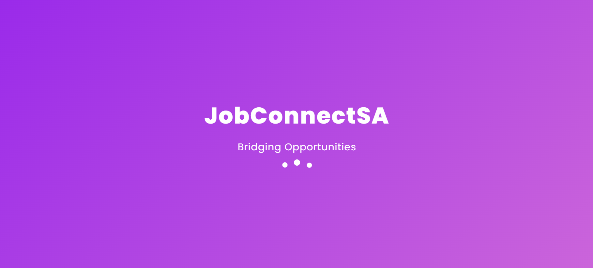
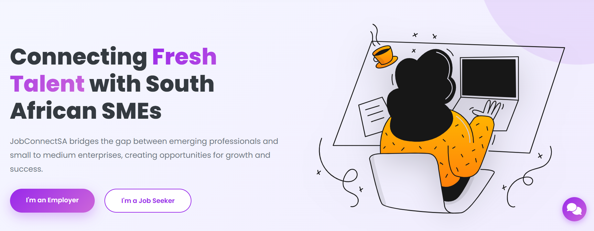
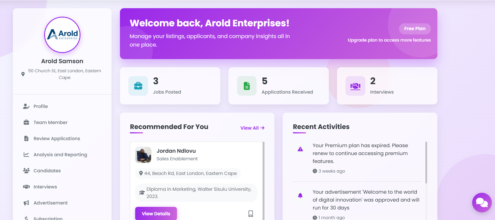
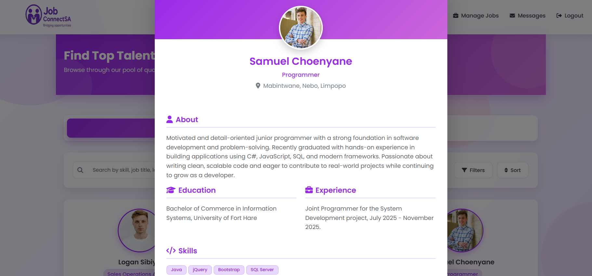
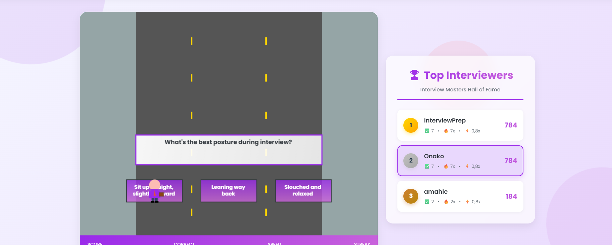
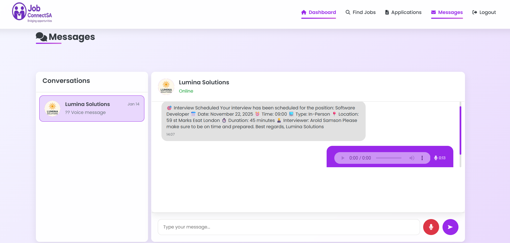

Web interfaces, workflows, database logic, and practical systems built around real user needs.
Software Developer & Power BI Analyst


Hi, I'm Choenyane Samuel.
I build practical digital systems and dashboards that help businesses organise information, improve processes, and make better decisions.
I connect code, requirements, and data to turn business problems into practical digital solutions. My work sits between software development and business intelligence, helping people understand what a system should do and how its data can support better decisions.
Get StartedAbout me
CONNECTING BUSINESS NEEDS WITH TECHNICAL SOLUTIONS.
I enjoy building systems that are clear, useful, and connected to real business needs. My focus is on understanding the problem first, then designing interfaces, workflows, database logic, and reports that support how people actually work.
My background in Information Systems helps me move between business analysis, software development, and Power BI reporting. Through projects such as TeleHealth, JobConnectSA, and BekaStok, I have worked with user roles, system processes, data structures, dashboards, and practical decision-support features.
Dashboards, KPIs, cleaned data, and visual reports that make business performance easier to understand.
Planning, documentation, tutoring experience, communication, and coordination.
Featured work
Selected systems and data projects.


Mobile app / Business system
Pilot Testing
BekaStok
An offline-first app that helps small and informal businesses track stock, sales, customer credit, and cash movement. Currently being pilot-tested with a local shop to evaluate real-world usability and workflow fit.
Flutter
Dart
SQLite
Supabase
Web system / Healthcare
TeleHealth System
Healthcare web system with authentication, appointments, payment integration, Azure deployment, and dashboard reporting.
Flask
Supabase
PayFast
Azure
Power BI






Web system / SME & graduate platform
JobConnectSA
A role-based platform built to connect graduates seeking work experience with SMEs that need affordable, skilled support. Graduates can create profiles, build CVs, prepare for interviews, search opportunities, and apply for jobs, while employers can post adverts, create jobs with screening questions, filter applications, shortlist candidates, and manage recruitment.
ASP.NET Web Forms
C#
SQL Server
Bootstrap
Power BI / Customer analytics
Customer Churn Dashboard
A course-based Power BI project completed using a DataCamp customer churn dataset. The dashboard explores churn patterns by contract type, data usage, monthly charges, payment method, and customer behaviour to support retention-focused business insights.
Power BI
Power Query
DAX
Data Cleaning
Churn Analysis
Skills
THE TOOLS BEHIND THE SYSTEMS AND INSIGHTS.
Software Development
Programming and logic
Web development
Database design and SQL
Power BI Analysis
Dashboard design
DAX and reporting logic
Data storytelling
Business & Project Delivery
Requirements gathering
System documentation
Communication and tutoring
Project coordination
Flutter
Dart
SQLite
Supabase
Power BI
Power Query
DAX
SQL
Excel
Flask
C#
ASP.NET
HTML/CSS
GitHub
VS Code
Visual Studio
Business Analysis
System Design
Payment Gateway Integration
Clarity before speed.
I like work to begin with shared understanding. The faster the team sees the same problem, the cleaner the solution becomes.
Small loops, visible progress.
I prefer steady checkpoints, direct communication, and decisions that keep the product moving without losing the reason behind the work.
Experience
Practical roles that shaped the way I work.
2 Semesters
Academic Tutor
Facilitated tutorial sessions, clarified complex concepts, prepared learning material, and supported students who needed additional guidance.
- Weekly tutorial delivery
- Supplementary examples and guidance
- Clearer communication through teaching
Final Year
Project Manager
Led a multidisciplinary final year project from planning to delivery, coordinating team tasks, scope, documentation, progress reporting, and implementation support.
- Scope, milestones, and delivery planning
- Team coordination and blocker removal
- Project documentation and reporting
Let's talk
Open to roles, projects, and practical ideas worth building.
For professional opportunities, project discussions, or collaboration, please reach out by email or connect with me on LinkedIn. You can also explore my work through my GitHub, project demos, and CV.